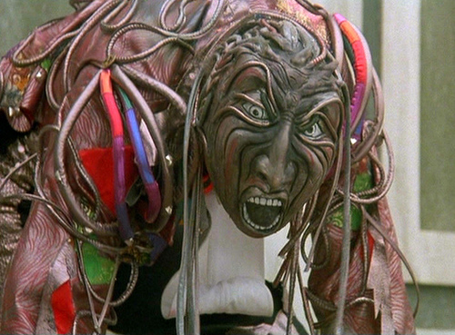

Return To Oz
Worst Movie Ever?


The Wheelers are a fictonal group of bizzare characters invented by L. Frank Baum. They are a very rare species who only live in the enchanted Land of Ev and are introduced in L. Frank Baum's third Oz book titled Ozma of Oz, published in 1907. They are rather disagreeable creatures who are neither bad nor good but more inbetween, much like the Winged Monkeys of Oz, being undeniably mischievous by nature. Ev also is a neighboring enchanted country to the magical Land of Oz but is separated from Oz by the Deadly Desert that cuts both lands off from the rest of the world, keeping its inhabitants undiscovered and safe from possible discovery and invasion.